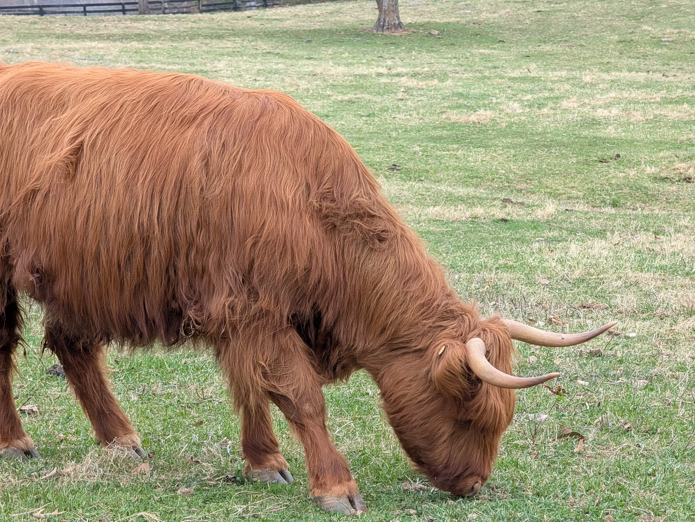

Highland genetics from the Shenandoah foothills
Quality Highland cattle, raised with intention
Thorny Knolls sits in the foothills of the Shenandoah, just outside Warrenton, Virginia. We're a small operation focused on producing desirable Highland genetics — healthy calves with good temperament, classic coats, and solid conformation.
Low-volume and hands-on. Every animal is handled daily, raised on grass, and bred with intention. If you're looking for quality Highland stock, you're in the right place.
Highland cattle sales
Warrenton, Virginia
Low-volume, hands-on
Questions about our herd or available cattle? James@thornyknolls.com
